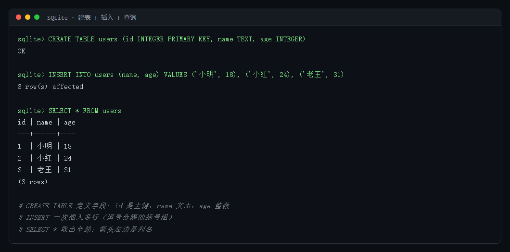
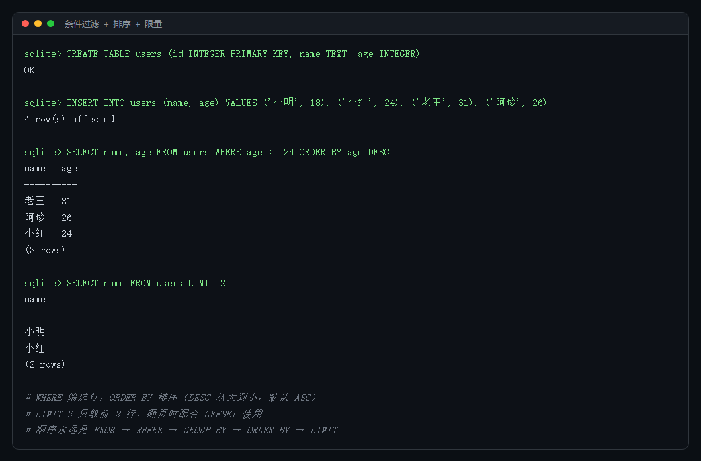
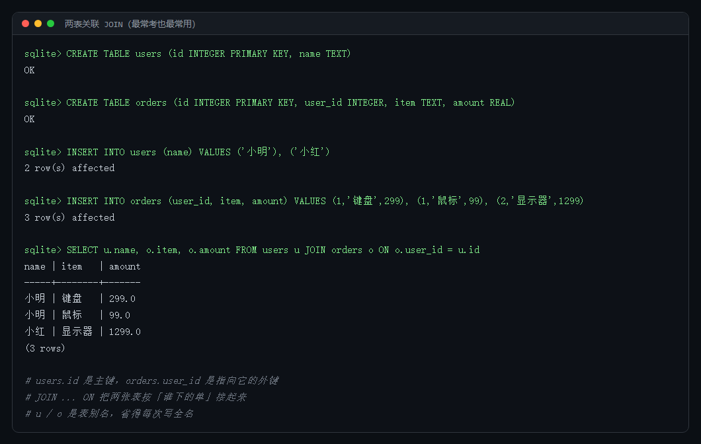
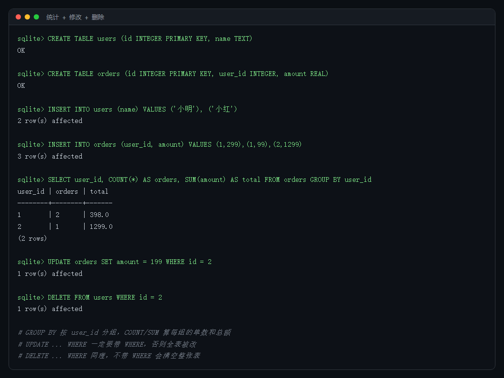

SQL 入门
下面每条语句都在本机 SQLite 引擎上真实执行过（Python 内置），结果是真的
0 数据库到底在存什么
关系型数据库 = 一堆表。表 = 行（记录）+ 列（字段），和 Excel 长得很像，但多了类型、约束和并发控制。
| 概念 | Excel 里的对应 | 说明 |
|---|---|---|
| 表 table | 一个工作表 | 同类数据放一张表，比如 users |
| 行 row | 一行 | 一条记录，比如一个用户 |
| 列 column | 一列 | 一个字段，比如 name |
| 主键 primary key | 行号（但不会重复） | 唯一标识一行，常用自增 id |
| 外键 foreign key | —— | 指向另一张表的主键，比如 orders.user_id |
🗣️ SQL 就是「跟数据库说话的语言」。你说
SELECT name FROM users，它把名字列给你。1 建表 / 插入 / 查询
三件套：CREATE TABLE → INSERT → SELECT。

真实执行：建表 → 一次插 3 行 → 查全部
1
INTEGER PRIMARY KEY 写在 SQLite 里就是「自增主键」，MySQL 写 INT AUTO_INCREMENT PRIMARY KEY。
2
一次插多行：VALUES (...), (...), (...)，比执行三次 INSERT 快得多。
3
SELECT * 取所有列；生产上建议只写需要的列名，少传数据更快。
2 条件 / 排序 / 限量
真正干活时，几乎不会「查全部」。

WHERE 过滤 → ORDER BY 排序 → LIMIT 取前 N 条
📐 SQL 的执行顺序（背下来能解决一半的疑惑）：
FROM → WHERE → GROUP BY → HAVING → SELECT → ORDER BY → LIMIT| 想干嘛 | 写法 |
|---|---|
| 等于 / 不等于 | WHERE age = 18 / age <> 18 |
| 范围 | WHERE age BETWEEN 18 AND 30 |
| 模糊匹配 | WHERE name LIKE '小%'（% 任意字符） |
| 多条件 | WHERE age > 20 AND city = '北京' |
| 翻页 | LIMIT 10 OFFSET 20（第 3 页，每页 10 条） |
3 两表 JOIN（最常考）
数据分表存，查的时候要拼起来 —— 这就是 JOIN。

users 和 orders 通过 user_id 关联，查出「谁买了什么」
1
users.id 是主键，orders.user_id 是外键 —— 这层关系是 JOIN 的基础。
2
JOIN ... ON 条件 把两张表接到一起；u / o 是表别名。
3
INNER JOIN（默认）= 两边都匹配才出现；LEFT JOIN = 左表全保留，右边没匹配就填 NULL。
⚠️ 最常见错误：忘了写
ON 条件。那样会变成「笛卡尔积」—— 3 个用户 × 3 个订单 = 9 行，数据全乱。4 统计 / 修改 / 删除
这三个必须在事务或谨慎操作下用，尤其是后两个。

GROUP BY + COUNT/SUM 统计；UPDATE 改一行；DELETE 删一行
| 函数 | 作用 |
|---|---|
COUNT(*) | 数行数 |
SUM(x) | 求和 |
AVG(x) / MAX(x) / MIN(x) | 平均 / 最大 / 最小 |
💀 UPDATE / DELETE 不带 WHERE = 全表遭殃。
新手最经典的事故。养成习惯：先写 WHERE，用同样的条件 SELECT 一遍，确认行数对了，再把 SELECT 改成 UPDATE/DELETE。
新手最经典的事故。养成习惯：先写 WHERE，用同样的条件 SELECT 一遍，确认行数对了，再把 SELECT 改成 UPDATE/DELETE。
UPDATE orders SET amount = 199 WHERE id = 2; ✅UPDATE orders SET amount = 199; ❌ 全表金额都变 1995 最容易出事的四件事
① 不带 WHERE 就 UPDATE/DELETE —— 见上节，先 SELECT 验证。
② NULL 的坑。
判空必须写
WHERE age <> 18 查不到 age 为 NULL 的行。判空必须写
WHERE age IS NULL / IS NOT NULL。③ 没有索引就查大表。
几百万行的表上
几百万行的表上
WHERE name = 'x' 会扫全表。给常查的列建索引：CREATE INDEX idx_users_name ON users(name);④ 在生产库上直接试 SQL。
先在本机建个一样的表试，或用
先在本机建个一样的表试，或用
BEGIN; ... ROLLBACK; 包起来。✅ 不同数据库的差异（SQLite vs MySQL vs PostgreSQL）主要在：自增主键写法、字符串函数、日期函数。核心的 SELECT / WHERE / JOIN / GROUP BY 几乎通用。